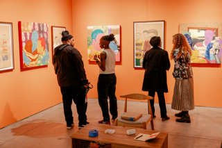

EXPO CHICAGO
XPO CHICAGO returns to historic Navy Pier on April 9–12, 2026 for its 13th edition.
The Galleries section features leading international galleries, alongside an expanded partnership with the forthcoming Obama Presidential Center. Embodiment, curated by Dr. Louise Bernard, Founding Director of the Obama Presidential Center Museum, will be inspired by the architecture and commissioned artists of the Obama Presidential Center ahead of its anticipated opening in 2026.
Focus highlights emerging galleries and artistic practices, featuring galleries 12 years old or younger. Katie A. Pfohl, Associate Curator of Contemporary Art at the Detroit Institute of Arts and past participant of the Curatorial Forum, will curate Focus in 2026. Titled Gathering of Waters, Focus will explore landscape, migration, and adaptive practices of craft and care, connecting artists and galleries from the Mississippi River Basin with work from across the African, Latin American and Caribbean diasporas.
Profile presents solo booths and focused projects by established international galleries, curated by Essence Harden. The section builds on EXPO’s institutional relationships and acquisition pathways, highlighting rigorous making and a scholarly impulse that invites sustained engagement over time.
EXPO CHICAGO also continues its collaboration with the Galleries Association of Korea (GAoK), presenting 12 leading Korean galleries within the fair. This initiative builds on the successful synergy established between Kiaf SEOUL and Frieze Seoul.
The EXPO CHICAGO 2026 Selection Committee is comprised of: Essence Harden (Curator, EXPO CHICAGO), Emanuel Aguilar (PATRON, Chicago), John Corbett and Jim Dempsey (Corbett vs. Dempsey, Chicago), Monique Meloche (moniquemeloche, Chicago), and Patrícia Pericas (Nara Roesler, São Paulo, New York, Rio De Janeiro). The Focus Selection Committee includes: Jonathan Carver Moore (Jonathan Carver Moore, San Francisco), and Haynes Riley (Good Weather, Chicago).
View the 2026 Show Map here.
2026 Exhibitors